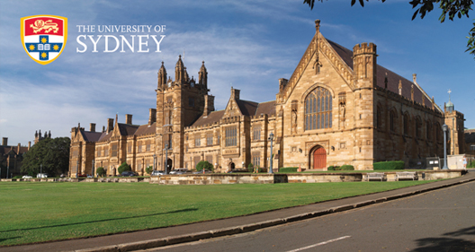
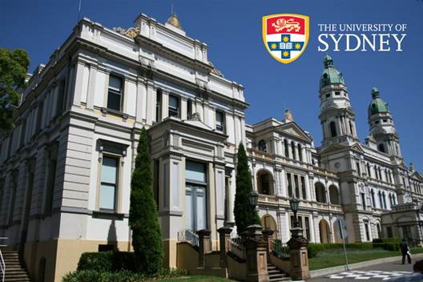
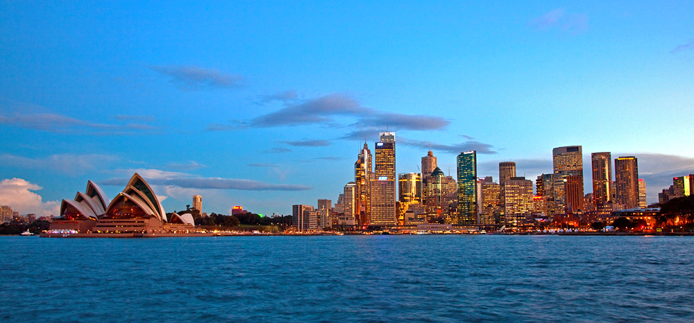
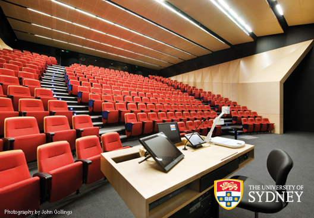

The University of Sydney Overview The University of Sydney was founded in 1850. It is Australia's first university and a world-renowned university, ranking among the top eight universities in Australia. It is praised for its high-quality teaching, is one of Australia's largest universities, and serves as a major research center. …
The University of Sydney
School OverviewFounded in 1850, the University of Sydney is Australia's first university and a world-renowned university, ranking among the top eight universities in Australia. It is praised for its high-quality teaching, is one of Australia's largest universities, and serves as a major research center. The University of Sydney has 17 faculties and over 100 departments, with a wide range of disciplines, known for its law, medicine, business, and arts programs. Currently, it has a total student body of 37,000, including 3,600 international students. It has 2,275 full-time faculty members and 2,959 other staff members. The main campus of the University of Sydney covers 72 hectares, located in the southwest of the city center, three kilometers from the city center. The traditional Neo-Gothic architecture reflects the university's long-standing academic and cultural heritage and is regarded as a precious national artifact. The University of Sydney boasts excellent research and educational facilities, is the largest university library in the country, and also the largest campus library in the Southern Hemisphere. The Fisher Library belongs to the University of Sydney.

The University of Sydney is located in Sydney, Australia's most famous city. This international metropolis of four million people is home to a variety of cultures, ethnicities, and religions, allowing you to experience authentic exotic cultures.

Type of school: Public university
Location: Sydney, New South Wales. The main campus of the University of Sydney covers 72 acres in central Sydney, and the university has six branch campuses: Mallett Street campus in the suburbs of Sydney, offering major faculties of business and nursing; The law school in Sydney's Harbour district, mainly offering law programs; The Conservatory of Music in Sydney's Harbour district; The Cumbeland campus, 16 kilometers west of the main campus, offering health sciences and nursing; The Camden campus, located 65 kilometers west of the main campus, specializing in agriculture and veterinary medicine; The Orange Agricultural College, located in a small town in central New South Wales, mainly offering agricultural management programs.
Transportation: Close to the central station and Chinatown, only a 5-minute drive from the central business district. Other campuses are located in and around the city center, offering convenient transportation.
School Rankings: Five-Star University, one of Australia's top eight universities. Ranked 31st in the Times 2007 World University Rankings.
City Overview
Sydney is the capital of New South Wales, Australia. It is not only Australia's largest, oldest, most prosperous, and most colorful city, but also a major hub for manufacturing, commerce, finance, transportation, tourism, and trade. It is also the world's largest wool sales center and one of the most famous cities internationally.
Sydney has a Mediterranean climate, with mild weather and abundant sunshine throughout the year. Located in the Southern Hemisphere, the season is exactly opposite to China's: December to February is summer, with an average temperature of 22°C; June to August is winter, with an average temperature of 13°C. The annual average temperature difference is only 7.8°C. The average annual precipitation is 1205 millimeters. There are 342 days a year when the sun is bright.

Strengths in majors
Bachelor of Commerce: Accounting / Business Information Systems / Business Law / Economics / Finance / Management / Marketing / Applied Science
Graduate programs: Master of Applied Information Technology / Master of Transportation Management / Master of Health Information Management / Master of Learning Science and Technology.
Honors and characteristics
The library is the largest in the Southern Hemisphere, equipped with advanced computer search systems and advanced information management. Students and teachers can use computer networks on every campus for support; This system can also be used in remote locations. 200 clubs offer a variety of sports, from archery and yoga to ancient rugby. The school also has sports fields, a 50-meter indoor swimming pool, and a gymnasium.

Specialized Settings
Agriculture, computer design, architecture and urban planning, architecture, applied linguistics, business, professional accounting, logistics management, education, engineering, photography, clinical psychology
Admission requirements
Most courses: IELTS total score of 6.5,
Educational courses: IELTS overall score of 7.0
School website http://sydney.edu.au/
悉尼大学 The University of Sydney
学校概况悉尼大学创建于1850年，是澳大利亚第一所大学，也是世界著名大学,在澳洲八大名校中位居前列。它以优质的教学得到好评，该校是澳大利亚最大的大学之一，也是主要的研究中心。悉尼大学有17个学院，共100多个系，学科广泛，以其法律、医学、商科和艺术类专业闻名，目前学生总数37,000人，其中海外学生3,600人。拥有全日制教师2,275人，其它职员2,959人。悉尼大学的主校区占地72公顷，位于市中心西南部，距市中心三公里。传统的新哥特式建筑反映出这座大学的学术和文化继承源远流长，并被当作国家的珍贵文物。悉尼大学的研究和教育设施优良，全国最大的大学图书馆，也是南半球最大的校园图书馆一费舍尔图书馆就属于悉尼大学。
悉尼大学位于澳大利亚最著名的城市悉尼。这座四百万人口的国际大城市，具有各种文化、民族和宗教，让你领略真正的异域风情。
学校类型 公立大学
地理位置 新南威尔士州悉尼市。悉尼大学的主校园覆盖了悉尼中心地带72英亩的面积，大学还有六间分校，它们分别是：位于悉尼市郊的Mallett Street校区，有商科和护理等主要学院；位于悉尼市港口区的法学院，主要设立法律专业；位于悉尼市港口区的音乐学院；位于正校门以西16公里的Cumbeland校区，有健康科学和护理专业；位于正校门以西65公里的Camden校区，以农科、兽医见长；位于新南威尔斯省中部小镇的Orange农业学院，主要设农业管理专业。
交通状况 靠近中央车站及唐人街，离中心商业区仅5分钟的路程。其它校园分布在城市中心及其周围，交通便利。
学校排名 五星级大学，澳洲八大名校之一。泰晤士报2007世界大学排名为第31位。
城市概况
悉尼市是澳大利亚新南威尔士州的首府，它不仅是澳大利亚最大、最古老、最繁荣、最多姿多彩的城市，是澳大利亚的主要制造业、商业、金融业、交通运输业、旅游业中心和贸易港，也是世界上最大的羊毛销售中心，国际上最著名的都市之一。
悉尼属地中海型气候，一年四季温和，阳光充足。因地处南半球，季节刚好与中国相反：12月至2月为夏季，平均气温22℃；6月至8月为冬季，平均气温为13℃。年均温差仅为7.8℃。年平均降水量为1205毫米。一年中有342日享受着明媚的阳光。
优势专业
商科学士：会计/商务信息系统/商法/经济学/金融学/管理/市场学/应用科学
研究生课程：应用信息技术硕士/运输管理硕士/健康信息管理硕士/学习科学与技术硕士。
荣誉和特色
图书馆是南半球最大的图书馆，有先进的计算机搜索系统，信息管理先进。学生和教师在每个校园都可以使用计算机网络，得到支持；在异地也可以使用这套系统。200个俱乐部提供多种运动项目，从射箭、瑜珈到古代橄榄球。学校还设有运动场、50米室内游泳馆、体育馆。
专业设置
农业、计算机设计、建筑与城市规划、建筑学、应用语言学、商科、职业会计、物流管理、教育学、工程学、摄影学、临床心理学
入学要求
大部分课程： IELTS总分 6.5，
教育类课程： IELTS总分7.0
English edition. Select 中文原文 to compare with the original Chinese article.
This article is edited and published by Liaoning Overseas Study Service Co., Ltd. The content is for study abroad planning reference only. Unauthorized reproduction is prohibited.
Information on policies, regulations, admissions brochures, and program fees is timely. Please refer to the latest releases from official institutions and institutions in various countries; For detailed verification, please Contact an advisor。